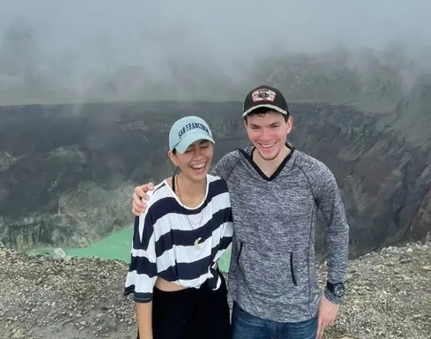
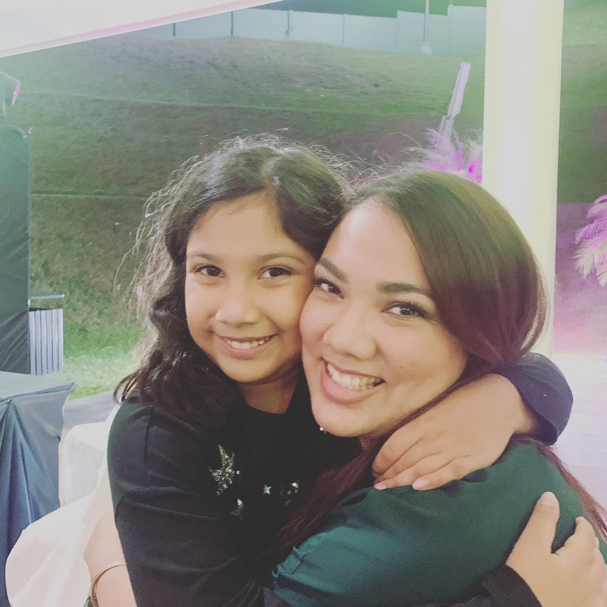
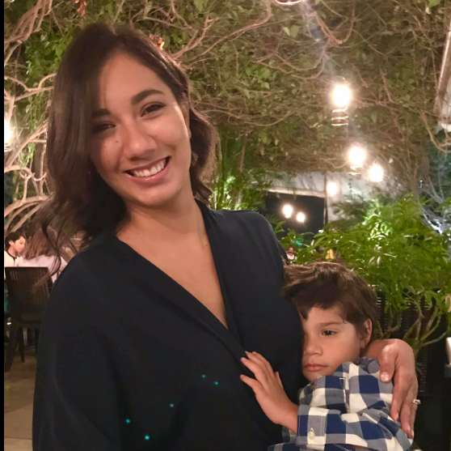
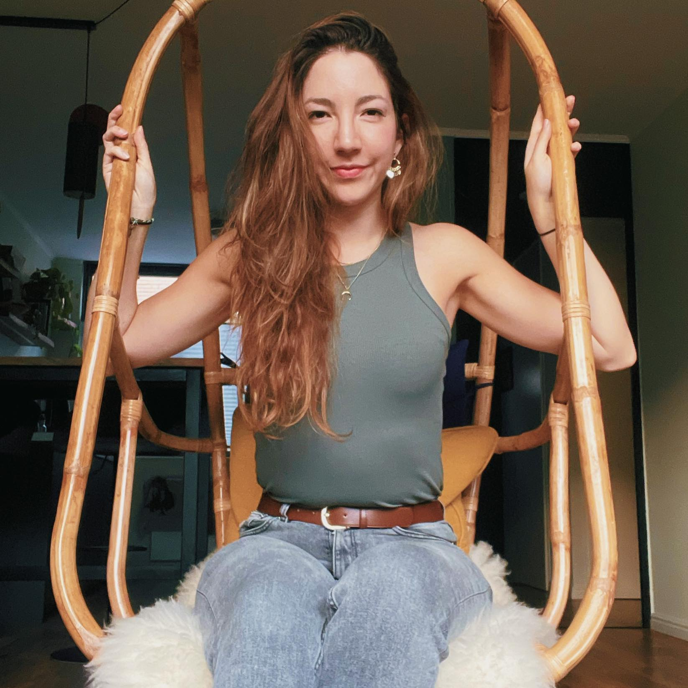
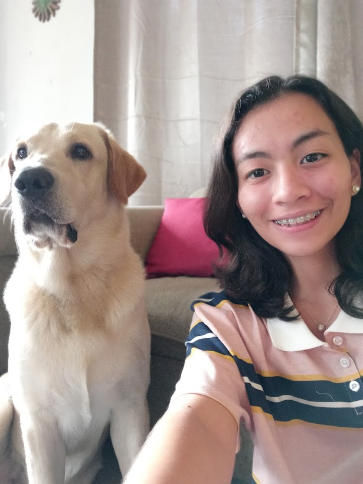
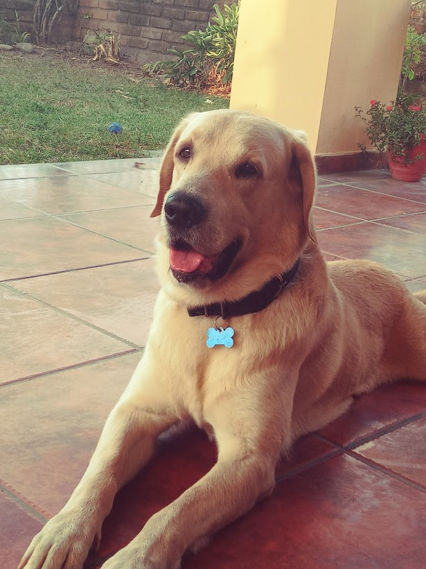

Datos generales
Mi familia
¡Hola! Mi nombre es Mónica Cabañas. Para hablarte un poco sobre mi empezaré con algunos datos generales como con el hecho de que nací el 23 de Abril del 2003; un dato curioso... no nací sola, tengo un hermano mellizo con el que he compartido mi vida hasta que entramos a la universidad (asistimos a universidades distintas).
También, aunque biológicamente son considerados mis "medio hermanos", tengo 5 hermanos mayores de parte de papá. Somos un montón de hijos, pero lo hace todo más animado en las reuniones familiares. Aquí te dejo algunas fotos de mis hermanos:
| Sofía | Karla | Graciela | Rebeca | Daniel | Eduardo |
|---|---|---|---|---|---|
|  |  |  |  |
Actualidad
En la actualidad tengo 19 años y estoy estudiando Ingeniería Informática en la Universidad Centroamericana José Simeón Cañas (UCA). Hablo dos idiomas: inglés y español (mi lengua materna), pero estoy haciendo mi esfuerzo por aprender Alemán. Como dato adicional: tengo un Labrador Retriever, solo quiero enseñártelo porque es una ternura.
|  |  |
|---|